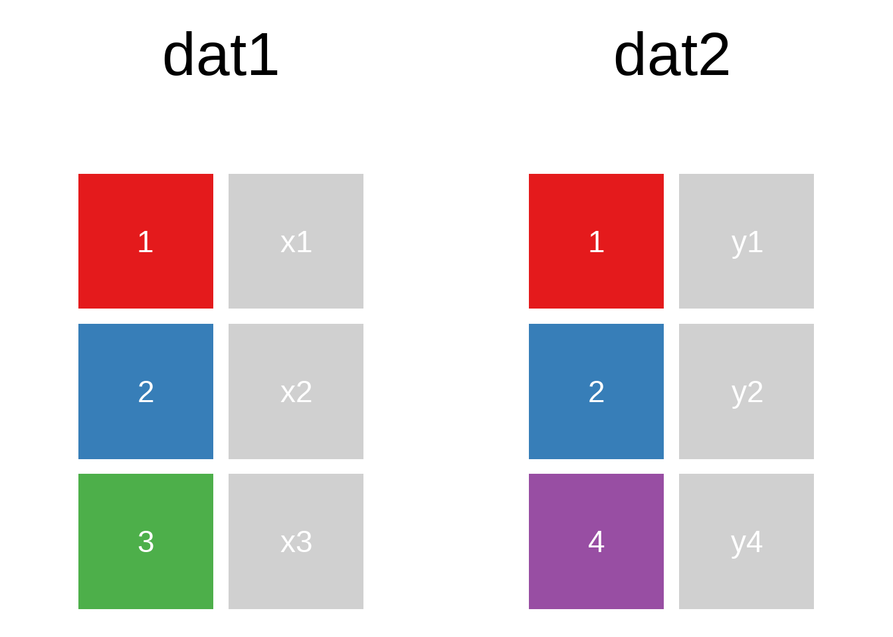
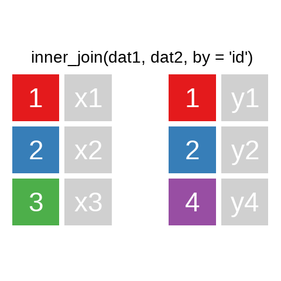
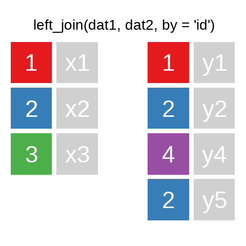
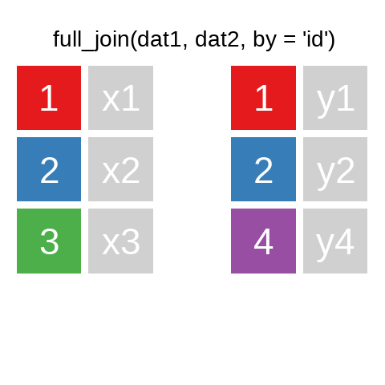

9 Data Wrangling II: Merging & reshaping
9.1 Joining/merging data sets
A mutating join allows you to combine variables from two data.frames. It first matches observations by their keys, then copies across variables from one table to the other.
R for Data Science: Mutating joins
A quick illustration:1



There are also right_join() and anti_join(). For a more in-depth introduction, the chapter on Relational Data in R for Data Science is highly recommended.
A very helpful option in the ..._join() functions is the ability to join different variables. For example, here we have some cases from ids_df, for which the (fictional) unemployment figures from alo_bula should be used. However, in ids_df, the variable Bula contains the state information, while in alo_bula, it is the variable bundesland:
Code
ids_df <- data.frame(pnr = sample(1:9,4),
Bula = c(2,1,14,15))
set.seed(90459)
alo_bula <- data.frame(bundesland = seq(1:8),
Werte = sample(letters,size = 8) # mit sample() kann eine zufällige Auswahl getroffen werden
)ids_df#> pnr Bula
#> 1 8 2
#> 2 3 1
#> 3 2 14
#> 4 6 15alo_bula#> bundesland Werte
#> 1 1 g
#> 2 2 m
#> 3 3 n
#> 4 4 z
#> 5 5 w
#> 6 6 r
#> 7 7 t
#> 8 8 hids_df %>% left_join(alo_bula,by = c("Bula"="bundesland"))#> pnr Bula Werte
#> 1 8 2 m
#> 2 3 1 g
#> 3 2 14 <NA>
#> 4 6 15 <NA>A quick check for the matching cases can be done using:
table(ids_df$Bula %in% alo_bula$bundesland)#>
#> FALSE TRUE
#> 2 2anti_join() allows for checking which key variables are not present in the other data.frame:
ids_df %>% anti_join(alo_bula,by = c("Bula"="bundesland"))#> pnr Bula
#> 1 2 14
#> 2 6 15alo_bula %>% anti_join(ids_df,by = c("bundesland"="Bula"))#> bundesland Werte
#> 1 3 n
#> 2 4 z
#> 3 5 w
#> 4 6 r
#> 5 7 t
#> 6 8 h9.1.1 Exercise
9.2 Reshaping Data: pivot_longer() & pivot_wider()
9.2.1 Wide to Long
Reshaping data from wide to long format is useful when you want to store multiple observations per row. For example:
bsp_df <- data.frame(bula = c("NRW", "NDS"), alo2018 = c(2, 2), alo2017 = c(1, 1))
bsp_df#> bula alo2018 alo2017
#> 1 NRW 2 1
#> 2 NDS 2 1We can use pivot_longer() to convert this wide format to long:
bsp_df %>% pivot_longer(cols = c(alo2018, alo2017), names_to = "year", values_to = "alo")#> # A tibble: 4 × 3
#> bula year alo
#> <chr> <chr> <dbl>
#> 1 NRW alo2018 2
#> 2 NRW alo2017 1
#> 3 NDS alo2018 2
#> 4 NDS alo2017 1To remove a prefix from the column names:
bsp_df %>% pivot_longer(cols = c(alo2018, alo2017), names_to = "year", values_to = "alo", names_prefix = "alo")#> # A tibble: 4 × 3
#> bula year alo
#> <chr> <chr> <dbl>
#> 1 NRW 2018 2
#> 2 NRW 2017 1
#> 3 NDS 2018 2
#> 4 NDS 2017 19.2.2 Long to Wide
To convert from long format back to wide:
bsp_df2 <- data.frame(land = c("NRW", "NDS", "NRW", "NDS"), alo = c(2.1, 1.8, 2.4, 2.2), alter = c("age_1825", "age_1825", "age_2630", "age_2630"))
bsp_df2#> land alo alter
#> 1 NRW 2.1 age_1825
#> 2 NDS 1.8 age_1825
#> 3 NRW 2.4 age_2630
#> 4 NDS 2.2 age_2630bsp_df2 %>% pivot_wider(names_from = alter, values_from = alo)#> # A tibble: 2 × 3
#> land age_1825 age_2630
#> <chr> <dbl> <dbl>
#> 1 NRW 2.1 2.4
#> 2 NDS 1.8 2.29.2.3 Exercise
9.3 Exercises
9.3.1 Exercise 1: Joining
Join the selected observations from PENDDAT_cf_W13.dta with the household data to include the region where the respondents live, using hnr and welle as keys.
pend_ue11 <- haven::read_dta("./orig/PENDDAT_cf_W13.dta", col_select = c("pnr", "welle")) %>% slice(1:10)
hh_dat <- haven::read_dta("./orig/HHENDDAT_cf_W13.dta", col_select = c("hnr", "welle", "region"))
pend_ue11 %>% left_join(hh_dat, by = c("welle"))#> # A tibble: 18,466 × 4
#> pnr welle hnr region
#> <dbl> <dbl+lbl> <dbl> <dbl+lbl>
#> 1 1000001901 1 [Wave 1 (2006/2007)] 10000019 4 [West]
#> 2 1000001901 1 [Wave 1 (2006/2007)] 10000020 4 [West]
#> 3 1000001901 1 [Wave 1 (2006/2007)] 10000023 4 [West]
#> 4 1000001901 1 [Wave 1 (2006/2007)] 10000026 4 [West]
#> 5 1000001901 1 [Wave 1 (2006/2007)] 10000031 4 [West]
#> 6 1000001901 1 [Wave 1 (2006/2007)] 10000032 4 [West]
#> 7 1000001901 1 [Wave 1 (2006/2007)] 10000035 4 [West]
#> 8 1000001901 1 [Wave 1 (2006/2007)] 10000040 4 [West]
#> 9 1000001901 1 [Wave 1 (2006/2007)] 10000043 4 [West]
#> 10 1000001901 1 [Wave 1 (2006/2007)] 10000055 3 [Süd]
#> # ℹ 18,456 more rows9.3.2 Exercise 2: Reshaping
Bring the following data into long format:
pend_ue11b <- haven::read_dta("./orig/PENDDAT_cf_W13.dta", col_select = c("pnr", "welle", "famstand")) %>%
slice(200:210) %>%
filter(welle %in% 2:3)
pend_ue11b %>% pivot_wider(names_from = welle, values_from = famstand)#> # A tibble: 3 × 3
#> pnr `2` `3`
#> <dbl> <dbl+lbl> <dbl+lbl>
#> 1 1000014501 -4 [Question mistakenly not asked] 3 [Married/civil p…
#> 2 1000014701 2 [Married/civil partnership, living together] 2 [Married/civil p…
#> 3 1000014702 2 [Married/civil partnership, living together] 2 [Married/civil p…Using names_prefix = "wave":
pend_ue11b %>% pivot_wider(names_from = welle, values_from = famstand, names_prefix = "wave")#> # A tibble: 3 × 3
#> pnr wave2 wave3
#> <dbl> <dbl+lbl> <dbl+lbl>
#> 1 1000014501 -4 [Question mistakenly not asked] 3 [Married/civil p…
#> 2 1000014701 2 [Married/civil partnership, living together] 2 [Married/civil p…
#> 3 1000014702 2 [Married/civil partnership, living together] 2 [Married/civil p…Using tidyexplain↩︎